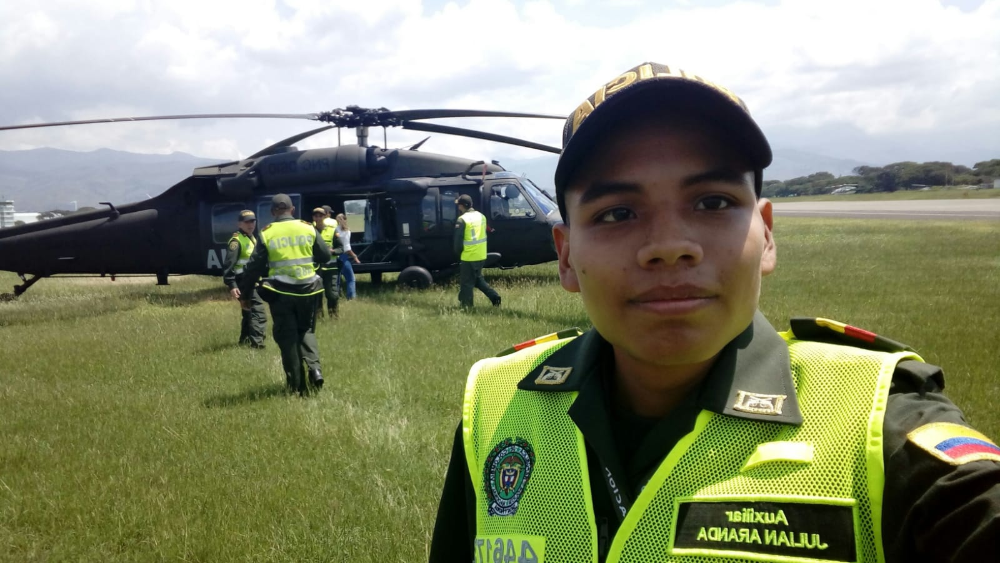
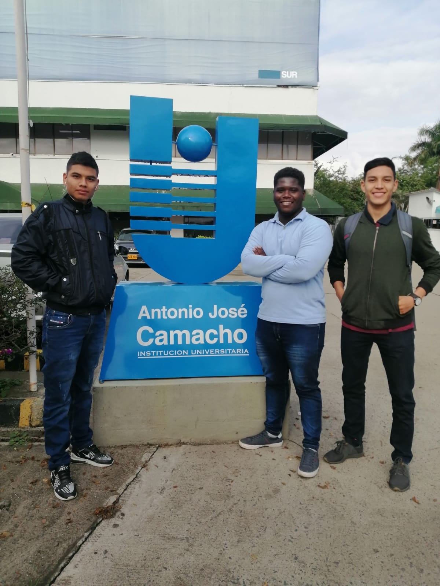
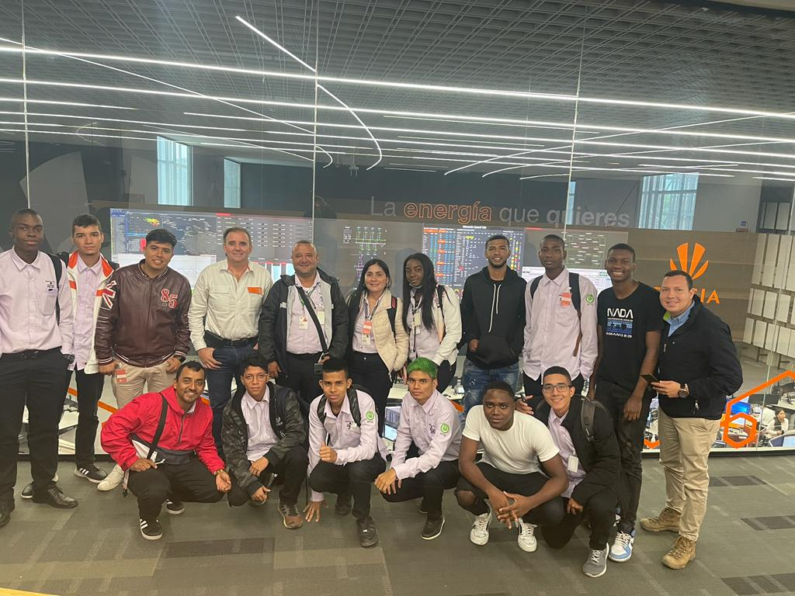
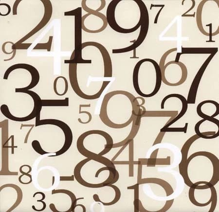
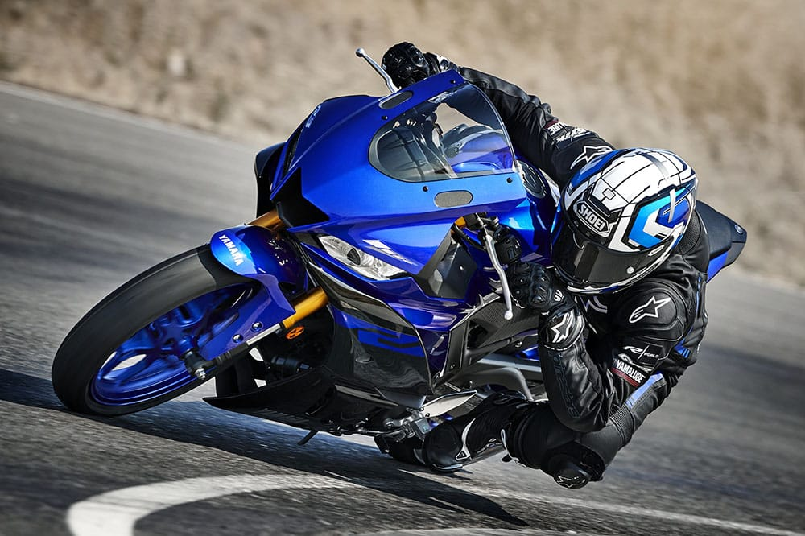

JULIAN RICARDO ARANDA GUTIERREZ, NACIDO EL 25 DE FEBRERO DE 1999, COLOMBIA CALI, VALLE DEL CAUCA. Vive en cali, en el barrio pueblo joven, con su padre Ricardo Aranda Guerrero, su madre Venus Gutierrez Erazo, las hermanas Diana Mayarly Aranda Gutierrez y Cindy Kartheine Aranda Gutierrez. Tubo una infancia sociable.
básicamente fue basada en estudiar desde el 2005 a sus 5 años, hasta 2016 a sus 17 años, Estudio la primaria (2005-2010) y el bachiller (2010-2016) en el colegio Juan Pablo II ubicado en el mismo barrio, destacado por su buen comportamiento ademas de académicamente por sus capacidades numéricas participando en olimpiadas matemáticas organizadas por la Universidad Del Valle. Salio con el titulado de bachiller técnico enauxiliar administrativo.


En el 2017 a su mayoría de edad (18 años) se presento a servirle a la patria, como la ley su país lo indicaba. Entro en a la policía nacional de Colombia el 1 de septiembre 2017, culminando el 31 de agosto 2018. Después de esto retoma sus estudios, ingresa a la Universidad Antonio José Camacho, a la carrera de ingeniería en sistemas. La Pandemia conlleva a la virtualidad por lo cual decide abandonarla, esta pandemia dura mas de 1 año, al culminar esta decide volver a los estudios lo cual lo hace en el SENA, ingresando a estudiar (IITIC) tecnólogo en telecomunicaciones, actualmente ya va ingresar a prácticas de este tecnólogo.
  Algunas de las cosas o temas, que le gustan o apasionan además de aprender cosas nuevas: - Los números - La tecnóloga - Las motos.
 